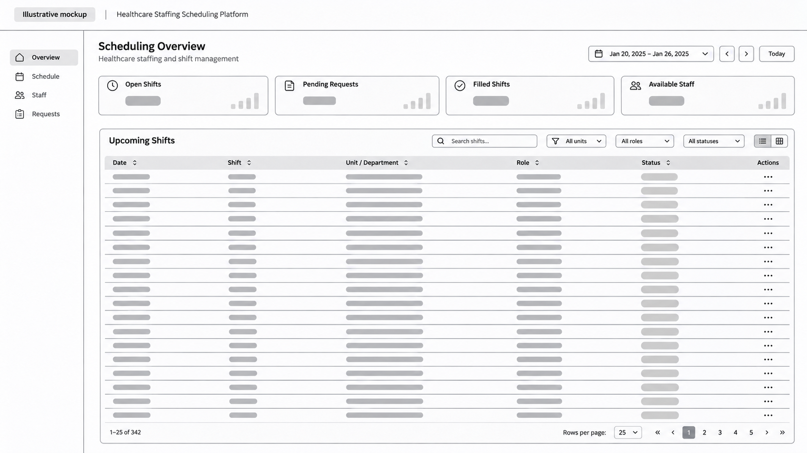

Illustrative mockup

Fictional interface and figures. Not a screenshot of the real system.
View full-size mockup ↗Healthcare Staffing Platform
Backend engineering for business workflows, reporting and system integrations.
- Automated scheduling requests, updates and notifications to reduce manual work.
- Automated onboarding workflows, including AI-assisted document verification, reminders and staff review.
- Developed TypeScript and PostgreSQL services for payroll and billing calculations, reporting and reconciliation.
- Improved CRM and database synchronization to reduce unnecessary API requests.
- Built APIs to automate workflow migrations and application deployments across environments.
Technologies: TypeScript, Node.js, PostgreSQL, GraphQL, Redis/BullMQ, AWS and OpenAI API.